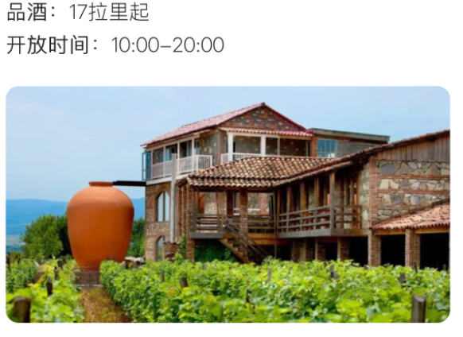
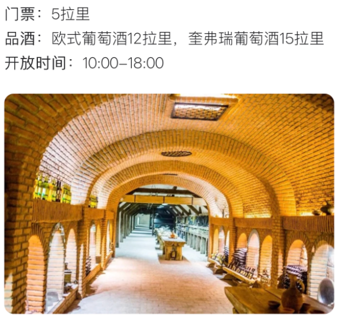
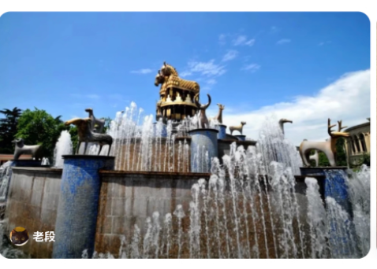
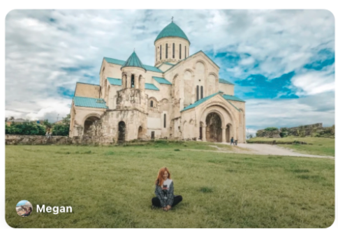

Day 1 第比利斯7.29 周三
Day 2 巴统7.30 周四
Day 3 第比利斯7.31 周五
Day 4 西格纳吉8.1 周六
Day 5 泰拉维8.2 周日
Day 6 卡兹别克8.3 周一
Day 7 第比利斯8.4 周二
Day 8 返程8.5 周三
备选景点
12:50 · 10h10m
上海浦东 → 第比利斯
东航 MU285 直飞，12:50 起飞，当地时间 19:00 到达（飞行约 10h10m）。机型空客 A332(宽)，含热正餐、免费上网。格鲁吉亚比北京时间晚 4 小时。
免费托运 1件 ≤23kg
随身 1件 ≤8kg
乘机人信息
👤 馒头 · LIU/MING · 座位 38C · 订单号
786026070151881814 凭证👤 刺猬 · ZHOU/ZIWEI · 座位 38A · 订单号
786026070151882878 凭证
19:00 · 1h
出关入境
持中国普通护照可免签入境，单次停留不超过30天，每180天累计停留不超过90天。白本护照也没问题，直接盖章入境。建议备好护照（有效期6个月以上）、往返机票行程单、酒店预订单的电子版或复印件，以备不时之需。
免签入境 · 白本友好
20:00 · 15min
换汇
到达机场后先换 1000 美元的拉里，够前几天用。推荐机场出口处的 InteliExpress 换汇点，免手续费（No Commission），汇率在机场里算不错的。
InteliExpress · 免手续费
20:15 · 15min
购买电话卡
在机场到达大厅的运营商柜台购买本地 SIM 卡，推荐 Magti 或 Geocell，约 20-30 拉里可买到含流量的套餐，方便导航和联络。
推荐 Magti / Geocell
21:00 · —
入住酒店Ibis Tbilisi Airport
Airport St, Isani-Samgori, Tbilisi 0158 · 地图 · 📞 00995-322102424
宜必思机场店，到达后直接入住休息。标准双床房（2张单人床），1成人+1儿童。15:00后入住，次日12:00前退房。
携程预订 · 订单号 1128149056255984 · ¥501 + 住宿税≈¥95 · 7.26 15:00前免费取消 ·
入住凭证 PDF
07:30 · 20min
退房 · 步行前往机场
最晚 7:30 退房（Ibis 12:00 前退房，提前走即可），酒店紧邻机场，步行约 5 分钟到达航站楼。
09:00 · 45min
第比利斯 → 巴统Georgian Airways A9505
09:00 起飞，09:45 落地巴统机场。乘客：LIU/MING、ZHOU/ZIWEI。经济舱，已预选座位（坐在一起）。航空公司值机参考：013LT7。
Batumi International Airport (BUS) · 地图
MING LIU：托运行李 1件23kg + 手提行李 8kg（55×40×20cm）· 电子机票号 606-2906403274
ZIWEI ZHOU：托运行李 1件23kg + 手提行李 8kg（55×40×20cm）· 电子机票号 606-2906403273
Gotogate 预订 · 订单编号 1136-248-649 · ¥1,457.43（$214.63）·
机票凭证 PDF
10:15 · 15min
打车前往酒店Taxi → Rooms Hotel
出机场后打车前往 Rooms Hotel Batumi，机场距酒店约 6 公里，车程约 10–15 分钟。可用 Bolt 叫车，费用约 10–15 GEL。
机场 → 酒店 · 约 6km · 10-15₾
10:30 · 15min
酒店寄存行李Rooms Hotel Batumi
酒店 15:00 才能正式入住，先在前台寄存行李，轻装出发逛巴统。
寄存行李 · 15:00 后正式入住
10:45 · 30min
阿里和尼诺Ali & Nino
巴统海滨标志性的移动雕塑，两个人像不断靠近、融合、穿过彼此又分离，象征爱情与战争。
11:25 · 40min
巴统圣母主教座堂Church of Mother of God
53 Gamsakhurdia St, Batumi · 地图
巴统的标志性教堂。
14:30 · 1h
阿尔戈号缆车Argo Cable Car
2 Gogebashvili St, Batumi · 地图
以伊阿宋前往科尔基斯夺取金羊毛所乘的船命名，长 2.6 公里，通往城市上方的阿努里亚山（Anuria Hill），可将黑海与城市风光一览无余，夜景尤其美丽。
往返 15 拉里 · 码头附近乘坐
16:00 · 30min
全球最美麦当劳
巴统的网红打卡点，建筑造型独特。
17:00 · —
正式入住酒店Rooms Hotel Batumi
Gogebashvili Street 10, 6010 巴统 · 地图 · 📞 +995 32 202 00 20
双层小屋（Bunk Cabin），2张单人床，2位成人，含早餐（自助/单点混合）。15:00后入住，次日12:00前退房。免费WiFi，私人浴室。
Booking.com 预订 · 确认号 6195148729 · GEL 343.05（¥22,533 含税，Booking.com 补贴 GEL 24.95）· 7.26 23:59前免费取消 ·
入住凭证 PDF
上午 · 自由活动
巴统自由活动
上午可以在巴统海边散步、逛逛老城，或者去 Ali and Nino 雕塑前打卡。中午退房后前往巴统火车站。
记得提前退房取行李
16:50 · 4h59min
巴统 → 第比利斯GR #801 · Stadler
格鲁吉亚铁路 GR #801 次列车（Stadler 车型），16:50 从巴统火车站出发，21:49 抵达第比利斯中央火车站，车程 4 小时 59 分钟。车上有 WiFi、充电口、餐饮服务和卫生间，沿途可欣赏格鲁吉亚乡村风光。建议选靠窗座位。
GR #801 · 16:50 出发 → 21:49 到达
⚠️ 车票尚未购买，预计本周六（7月12日）开放购票，届时记得及时抢票！
22:00 · —
入住酒店
住宿：第比利斯（待确认）
09:00 · 2h
前往西格纳吉
从第比利斯 Samgori 地铁站附近乘坐发往西格纳吉的小巴，每 2 小时一班，车程近 2 小时，车费 10 拉里。自驾更灵活。
小巴：Samgori 出发 · 每 2h 一班 · 10₾
11:30 · 1.5h
古城墙Sighnaghi City Wall
Sighnaghi Fortress, Kakheti · 地图
完工于 18 世纪伊拉克略二世在位期间，总长 4 公里，镶嵌着 23 座塔楼。城墙内有圣乔治教堂（Saint George Church），钟楼主宰小镇天际线。黄昏是漫步城墙的最佳时间——近处是错落有致的红瓦民居，远处是连绵的高加索山脉，夕阳下彷如油画。
推荐黄昏时分登城墙
13:30 · 1h
圣尼诺修道院Monastery of St. Nino
Bodbe Monastery, Sighnaghi · 地图
格鲁吉亚基督教化的圣地。
15:00 · 1.5h
Pheasant's Tears 餐厅
18 Baratashvili St, Sighnaghi · 地图
西格纳吉最受欢迎的餐厅之一，以自然酒和格鲁吉亚传统菜闻名。
推荐餐厅
17:00 · —
入住酒店
住宿：西格纳吉（待确认）
09:00 · 1h
前往泰拉维
西格纳吉与泰拉维之间小巴一天仅一班，西格纳吉发车时间 9:00，泰拉维发车时间 15:00。自驾更灵活。
小巴：西格纳吉 9:00 发车
10:30 · 1h
泰拉维古堡Batonistsikhe Castle
Batonistsikhe, Telavi, Kakheti · 地图
泰拉维是卡赫季的首府，镇上的古堡曾是卡赫季国王的住处。附近的卡赫季葡萄酒协会（Kakheti Wine Guild）可组织酒庄团队游，也可包车自行探索。
12:00 · 1.5h
Shumi Estate
Tsinandali, Telavi, Kakheti · 地图
泰拉维附近的知名酒庄，品酒 + 参观。
酒庄
14:00 · 1h
查夫查瓦泽故居博物馆House Museum of Alexander Chavchavadze
Tsinandali Estate, Telavi · 地图
格鲁吉亚浪漫主义诗人的故居。
15:30 · —
入住酒店
备选住宿：Qvevrebi 陶罐酒店。
住宿：AGARANI Estate
08:30 · 1h
阿拉韦尔迪主教座堂Alaverdi Cathedral
Alaverdi Monastery, Akhmeta · 地图
卡赫季地区最重要的中世纪教堂之一，离开泰拉维后顺路参观。
12:00 · 1h
阿娜努日要塞Ananuri Fortress
Ananuri, Dusheti Municipality · 地图
旧版《孤独星球》外高加索篇的封面，2007 年被联合国教科文组织列入世界文化遗产。
世界文化遗产
16:00 · —
入住酒店
住宿：Rooms Kazbegi
07:00 · 3h
卡兹别克圣三一教堂Gergeti Trinity Church
Gergeti, Stepantsminda, Kazbegi · 地图
海拔 2170 米山顶的中世纪教堂，背靠卡兹别克雪山，格鲁吉亚最具标志性的风景之一。
11:30 · 30min
俄格友谊纪念碑
Georgian Military Highway, Gudauri · 地图
时间不够可略过。
14:00 · 1h
巨石阵Chronicles of Georgia
Tbilisi Sea area, Tbilisi · 地图
纪念碑背后的山下是第比利斯海，一片人造湖泊。先坐地铁到 Grmagele 站下，再换 60 路小巴即可到达。
地铁 Grmagele 站 → 换 60 路小巴
17:00 · 1.5h
里克公园 + 缆车Rike Park
黄昏到里克公园，坐缆车上山看格鲁吉亚母亲雕像（Mother Georgia）——一尊一手持剑、一手端葡萄酒的雕像，高 20 米，苏联时期作品。
缆车攻略待确认
19:00 · 30min
钟楼Clock Tower
13 Shavteli St, Tbilisi 0105 · 地图
每到整点，顶部阳台会打开，有个小天使出来敲铃。12:00 和 19:00 下面的阳台会打开，上演 2 分钟的迷你木偶剧。
推荐 12:00 或 19:00 到
20:00 · —
入住酒店
住宿：第比利斯（待确认）
08:00 · 1.5h
圣剑山Didgori Battle Memorial
Didgori, Tetritskaro · 地图
迪格里战役纪念碑，纪念 1121 年格鲁吉亚大卫四世大败塞尔柱突厥联军。
11:30 · 30min
钟楼Clock Tower
13 Shavteli St, Tbilisi 0105 · 地图
每到整点，顶部阳台会打开，有个小天使出来敲铃。12:00 和 19:00 下面的阳台会打开，上演 2 分钟的迷你木偶剧。
推荐 12:00 或 19:00 到
10:30 · 1h
第比利斯圣三一主教座堂Holy Trinity Cathedral
第比利斯最大的东正教教堂，高 101 米，是格鲁吉亚东正教的象征。
12:00 · 1.5h
旱桥市场Dry Bridge
第比利斯最有特色的跳蚤市场。9 点开始摆摊，下午 4 点左右收摊，周末最热闹。过旱桥后对面的 Aghmashenebeli 街是越夜越美丽的酒吧街。
建议上午去，摊位最全
16:00 · —
第比利斯 → 上海
返程机票待购买。参考价 ¥2990 起。
返程机票待定
第比利斯
国家博物馆
3 Rustaveli Ave, Tbilisi · 地图
Georgian National Museum
泰拉维 Telavi
双胞胎酒窖
Napareuli, Telavi, Kakheti · 地图
Twins Wine Cellar。有一个奎弗瑞葡萄酒博物馆，可参观、品酒、参与采摘葡萄、清洁奎弗瑞等活动。

卡赫季 Kakheti
海列巴酒庄
Khareba Winery, Kvareli, Kakheti · 地图
Kvareli Wine Cave。隧道改造的酒窖，14-15°恒温，可参观并品酒。

库塔伊西 Kutaisi
科尔基斯喷泉
David Agmashenebeli Sq, Kutaisi · 地图
Colchis Fountain。南边 200 米的库塔伊西国立历史博物馆藏品丰富。

库塔伊西 Kutaisi
巴格拉特主教座堂
Bagrati Cathedral, Kutaisi · 地图
Bagrati Cathedral

格鲁吉亚历史文化
从基督教发源圣城到岩壁洞穴要塞，从高加索雪山教堂到苏联温泉废墟，跟着行程串起格鲁吉亚 3000 年的信仰、王朝与秘境。
内容整理自纪录片《环球山河志》「格鲁吉亚」篇及公开历史资料
📜 格鲁吉亚千年简史
公元前6世纪 — 前4世纪
科尔基斯与伊比利亚：两个古国
格鲁吉亚西部是希腊神话「金羊毛」传说的发生地科尔基斯王国，东部则是伊比利亚王国（卡特里王国）。考古发现格鲁吉亚境内有约 8000 年前的葡萄酒酿造痕迹，被普遍认为是世界葡萄酒的发源地之一。
公元 337 年
圣尼诺传教，基督教定为国教
女修士圣尼诺（St. Nino）从卡帕多西亚来到姆茨赫塔传教，感化伊比利亚国王米利安三世皈依基督教。格鲁吉亚由此成为世界上最早将基督教定为国教的国家之一，仅次于亚美尼亚。
公元 5 世纪
迁都第比利斯
伊比利亚国王瓦赫坦格一世（Vakhtang Gorgasali）相传狩猎时发现温泉，遂在此建城，并将首都从姆茨赫塔迁至第比利斯（格鲁吉亚语「第比利」意为温暖）。
7 — 11 世纪
阿拉伯征服与王国统一
阿拉伯人一度占领第比利斯并建立酋长国，格鲁吉亚各封建公国长期分裂、抵御外敌。公元 1003 年，巴格拉特三世统一格鲁吉亚各公国，建立统一的格鲁吉亚王国，定都库塔伊西。
12 — 13 世纪初
塔玛尔女王与黄金时代
格鲁吉亚在国王乔治三世与其女塔玛尔女王（Queen Tamar the Great）统治下达到鼎盛，疆域、军事、文学、建筑全面繁荣，史称「黄金时代」。瓦尔济亚洞穴城即建于这一时期，用以抵御波斯与突厥的入侵。
13 — 18 世纪
蒙古、波斯、奥斯曼的轮番入侵
蒙古西征、帖木儿入侵、波斯萨法维王朝与奥斯曼帝国相继争夺高加索，格鲁吉亚长期在大国夹缝中挣扎，境内多处教堂古迹屡遭焚毁又重建，也是斯瓦涅季石塔和西格纳吉防御城墙修筑的历史背景。
1801 — 1917 年
并入俄罗斯帝国
1801 年东格鲁吉亚被沙俄吞并，此后西部各公国相继并入，格鲁吉亚全境成为俄罗斯帝国的一部分，第比利斯发展为外高加索的行政与文化中心。
1921 — 1991 年
苏维埃时期
1918 年短暂独立后，1921 年红军进入格鲁吉亚，1936 年正式成为苏联加盟共和国。苏联时代格鲁吉亚是重要的疗养与农产基地（茶叶、葡萄酒、矿泉水），茨卡尔图博等温泉小镇一度是苏联精英的度假天堂，斯大林本人也出生于格鲁吉亚哥里。
1991 年至今
独立建国
1991 年格鲁吉亚宣布独立，此后经历阿布哈兹、南奥塞梯冲突及 2008 年俄格战争等波折。如今的格鲁吉亚在传承千年信仰与建筑遗产的同时，也在探索独立自主的现代国家身份。
姆茨赫塔坐落于姆特克瓦里河与阿拉格维河交汇处，早在第比利斯建城前，这里就是伊比利亚（卡特里）王国的都城，直至公元 5 世纪瓦赫坦格一世才迁都第比利斯。作为格鲁吉亚最古老的城市之一，姆茨赫塔从未因迁都而没落，反而因公元 4 世纪基督教的传入，成为格鲁吉亚人心目中真正的「精神首都」。
世界遗产 1994
距第比利斯 20 公里
生命之柱大教堂 Svetitskhoveli Cathedral
4 世纪起源 · 11 世纪定型
相传耶稣基督的圣袍被两名姆茨赫塔犹太商人带回并埋葬于此，故得名「生命之柱」（格鲁吉亚语 Sveti「柱」+ Tskhoveli「生命」）。教堂始建于公元 4 世纪，现存主体建于 11 世纪初，是格鲁吉亚东正教最重要的圣殿，地位仅次于耶路撒冷圣墓教堂，历代格鲁吉亚国王的加冕、婚礼、葬礼均在此举行。
💡 教堂中央供奉的圣尼诺十字架，相传由圣尼诺本人所立，是格鲁吉亚的「第一国宝」。
季瓦里修道院 Jvari Monastery
建于 6 世纪
又称「十字架教堂」，矗立在俯瞰姆茨赫塔的山丘上。相传圣尼诺公元 4 世纪携带葡萄藤十字架从卡帕多西亚出发，在此立起木十字架，促成国王米利安三世皈依基督教，格鲁吉亚从此奠定「圣国」地位。季瓦里修道院是格鲁吉亚现存最早的十字穹顶建筑之一，站在山顶可俯瞰两河交汇的壮丽全景。
相传伊比利亚国王瓦赫坦格一世狩猎时，猎鹰追逐野鸡坠入温泉而被烫熟，国王由此发现城中的天然硫磺温泉，遂决定在此建城，并将都城从姆茨赫塔迁来。格鲁吉亚语「第比利斯」（Tbilisi）正是源于「Tbili」（温暖），指代这里的地热温泉。老城至今仍保留着硫磺浴场（Abanotubani），是第比利斯最具标志性的体验之一。
纳里卡拉要塞 Narikala Fortress
始建于 4 世纪
俯瞰整个老城的纳里卡拉要塞，与第比利斯建城同期修建，是保卫城市的最后一道军事防线，被誉为「母亲的堡垒」。历经波斯、阿拉伯、奥斯曼多次统治与战火，1827 年俄军火药库爆炸曾令要塞严重损毁，现存城墙多为 17 世纪重建。山顶矗立着高大的「格鲁吉亚母亲」雕像，一手持剑警示敌人，一手持酒杯欢迎宾客，恰是格鲁吉亚民族性格的写照。
缆车 6 分钟直达
圣尼古拉教堂 12世纪
老城位于库拉河西岸，狭窄石板巷弄间东正教教堂、亚美尼亚教堂、清真寺与犹太会堂比邻而立，是格鲁吉亚地处欧亚十字路口、历经波斯-拜占庭-奥斯曼-俄罗斯多重文明影响的缩影。木质雕花阳台是老城建筑的标志性符号，融合了波斯与欧洲风格。
✓ 已列入行程 Day7 卡兹别克→第比利斯 / Day8 返程日
乌普利斯齐赫 Uplistsikhe
铁器时代起 · 3000 余年
「乌普利斯齐赫」意为「主的堡垒」，起源于古代伊比利亚（卡特里）王国，是格鲁吉亚最古老的城市化聚落之一，也是三大洞穴城市中唯一保存完好的一个。鼎盛时期拥有超过 700 个洞穴建筑，公元 10 世纪人口一度多达两万，融合了安纳托利亚与波斯的宗教文化元素，直到 19 世纪才最终废弃。
哥里以东约 10 公里
世界遗产预备名录
瓦尔济亚洞穴城 Vardzia
12 世纪黄金时代
世界现存规模最大的洞穴城市，由塔玛尔女王之父乔治三世下令在埃鲁舍季山（「熊山」）的火山凝灰岩崖壁上开凿，用以抵御波斯与突厥入侵。相传塔玛尔女王下令一天开凿一个洞穴，共凿出 365 个洞窟，鼎盛时多达 300 余个洞穴、13 层楼台，内部有教堂、修道院、图书馆和至今仍在流淌的地下引水系统。1283 年一场大地震震落大片崖壁，超过三分之二的建筑受损，暴露的洞窟从此失去了原本的隐蔽防御价值。
💡 瓦尔济亚最早的居住痕迹可追溯至青铜时代，距今已有两千余年历史。
格尔盖蒂三一教堂 Gergeti Trinity Church
建于 14 世纪 · 海拔 2170 米
背靠海拔 5033 米的卡兹别克雪山，格尔盖蒂三一教堂是格鲁吉亚最具标志性的画面之一，也被称为「离天堂最近的教堂」。相传僧侣加布里埃尔在山岩上目睹圣三位一体显现，受启示而建造此教堂；另一则传说称建造者夜宿工地，清晨醒来却发现圆顶已神秘竣工。教堂墙面仍残留 16 世纪壁画痕迹，是赫维地区现存最古老的十字穹顶建筑。卡兹别克山在希腊神话中还被认为是普罗米修斯被锁链缚身、遭鹰啄食肝脏之地。
✓ 已列入行程 Day6 泰拉维→卡兹别克 / Day7 卡兹别克→第比利斯
上斯瓦涅季与乌树故里 Svaneti · Ushguli
世界遗产 1996
斯瓦涅季被称为「千塔之国」，斯凡人世代居住在海拔两千米以上的高山中，冬季大雪封山、与外界完全隔绝，独特的地理环境反而完整保留了古老的斯凡文化。家家户户建有石砌防御塔楼「斯万塔」，现存最古老的可追溯至公元 8-9 世纪，高 10-25 米，兼具居住、瞭望、防御与避难功能，是氏族纷争年代的生存智慧。乌树故里坐落在什哈拉雪山脚下，海拔 2200 米，是欧洲海拔最高的永久居住聚落。
💡 斯瓦涅季现存超过 200 座中世纪塔楼，最高可达 28 米。
西格纳吉 Sighnaghi
城墙建于 18 世纪
「西格纳吉」一词源自突厥语，意为「防御的住所」。18 世纪国王埃雷克勒二世为抵御波斯、奥斯曼入侵，修建了一条长逾 4 公里、拥有 23 座塔楼和 6 座城门的防御城墙，环绕整个山城，常被称作「微缩长城」。因小镇拥有全天候营业的婚姻登记处，被戏称为「爱情之城」。西格纳吉所在的卡赫季地区是格鲁吉亚葡萄酒的核心产区，酿酒历史长达 8000 年，被视为世界葡萄酒的发源地。附近的波德别修道院相传是圣尼诺的安息之地。
✓ 已列入行程 Day4 西格纳吉 / Day5 泰拉维
库塔伊西与巴格拉特大教堂 Kutaisi · Bagrati Cathedral
格鲁吉亚统一王国首都
库塔伊西历史可追溯至公元前 3 世纪，曾是科尔基斯王国、格鲁吉亚统一王国（975-1122 年）及伊梅列季王国的都城。公元 1003 年，统一格鲁吉亚各公国的巴格拉特三世下令修建巴格拉特大教堂，标志着格鲁吉亚黄金时代的开启。教堂历经奥斯曼军队摧毁、近 300 年半废墟状态，2012 年修复重建，如今矗立在库塔伊西的制高点上，可俯瞰全城。
巴统地处黑海之滨，自古是格鲁吉亚（科尔基斯）通往地中海世界的贸易门户，19 世纪并入俄罗斯帝国后发展为重要港口城市。如今的巴统融合了古典教堂建筑（如巴统圣母主教座堂）与现代地标（Ali & Nino 移动雕塑、网红建筑群），是格鲁吉亚黑海沿岸古今交汇的缩影。
备选目的地
茨卡尔图博温泉小镇 Tskaltubo
1930s 苏联旗舰疗养地
茨卡尔图博天然氡碳酸盐温泉自古被认为有治疗效果，20 世纪 30 年代起在斯大林推崇下被打造为苏联旗舰疗养胜地，鼎盛时期建有 19 座大型疗养院、9 座公共浴场，每天有专列从莫斯科开来，年接待游客超过 12 万人次，专为苏联精英、高官与劳模提供「医疗度假」服务。苏联解体后疗养体系随之瓦解，如今大部分疗养院已废弃，恢弘的野兽派建筑与斑驳的雕花楼梯在岁月侵蚀中静静矗立，成为记录一个时代兴衰的「苏联废墟」。
💡 格鲁吉亚国父斯大林出生于第比利斯以西的哥里，哥里也保留着乌普利斯齐赫洞穴城和斯大林博物馆，是探访苏联历史的重要一站。
位于库塔伊西附近
格鲁吉亚避雷指南
那些和中国习惯截然不同的文化差异，帮你避开社交雷区，做一个受欢迎的旅行者。
🚨 中国游客最常踩的 10 个坑
| ❌ 用啤酒敬酒 | ✅ 敬酒只能用葡萄酒或 Chacha（烈酒），用啤酒等于诅咒对方 |
| ❌ 进教堂穿短裤 | ✅ 女性戴头巾穿长裙，男性不穿无袖和短裤 |
| ❌ 教堂内拍照 | ✅ 教堂内禁止拍照，安静参观 |
| ❌ 随便找换汇点 | ✅ 推荐机场 InteliExpress，免手续费 |
| ❌ 路边拦出租不议价 | ✅ 用 Bolt / Yandex 打车，或先谈好价 |
| ❌ Tamada 发言时插嘴 | ✅ 安静聆听祝酒词，等说完再饮酒 |
| ❌ 打听收入和年龄 | ✅ 严重侵犯隐私，绝对不问 |
| ❌ 未经同意拍当地人 | ✅ 拍照前先征得对方同意 |
| ❌ 讨论俄格政治 | ✅ 避免提及俄格关系、南奥塞梯等话题 |
| ❌ 山区自驾不买全险 | ✅ 山路险峻，务必购买全险和人身险 |
高危 绝对不要用啤酒敬酒
在格鲁吉亚，用啤酒敬酒等于诅咒对方遭遇坏运气。这是中国游客最容易踩的文化雷区。敬酒必须用葡萄酒或 Chacha（格鲁吉亚白兰地），啤酒只能自己默默喝，不能举杯碰杯。
🇨🇳 中国习惯啤酒、白酒、葡萄酒都可以敬酒碰杯
🇬🇪 格鲁吉亚敬酒只能用葡萄酒或烈酒，啤酒敬酒 = 诅咒
高危 Supra 宴席和 Tamada 酒司令
格鲁吉亚社交核心是 Supra（传统宴席），由 Tamada（酒司令）主持。Tamada 每次提出一个祝酒主题（友谊、家人、已故的人等），从左手边依次传递，每个人必须围绕该主题讲出自己的感受，讲完后将杯中酒一饮而尽。Tamada 说祝酒词期间绝对不能插嘴，否则 Tamada 有权罚酒。在 Tamada 说完之前不要提前喝酒，否则会被当作没喝，要补喝一杯。一场正式宴席主人通常会敬 12 次以上的酒。
🇨🇳 中国习惯酒桌上随时可以自由敬酒、碰杯，气氛灵活
🇬🇪 格鲁吉亚严格由 Tamada 掌控节奏，轮流发言，仪式感极强
注意 不能轻易拒绝主人的酒和食物
格鲁吉亚人将宾客视为「上天的恩赐」，热情好客到令人惊讶的程度。被邀请到当地人家中做客时，主人会准备远超正常食量的食物和酒。直接拒绝食物和酒会被视为不礼貌。如果实在喝不了，可以委婉地说「够了够了，实在太好了」而不是直接拒绝。
了解 吃 Khinkali 的正确方式
Khinkali（格鲁吉亚大饺子）的正确吃法：用手拿着顶部的褶皱，先咬一小口，吸出里面的汤汁，再吃肉馅和面皮。不要用刀叉，顶部面疙瘩通常不吃。如果用刀叉切开饺子，会被当地人善意地「教育」。
高危 进教堂的着装要求（严格执行）
女性：必须戴头巾（或帽子）包裹头发，穿过膝长裙，不能穿短裤短裙。教堂门口通常备有头巾和围裙供游客借用。
男性：不能穿无袖上衣，必须脱帽，避免穿短裤。
第比利斯圣三一大教堂（Sameba）因游客量大，要求相对宽松，但其他教堂和修道院都严格执行。
🇨🇳 中国习惯参观寺庙时着装要求比较宽松
🇬🇪 格鲁吉亚教堂着装要求非常严格，不达标不让进
注意 教堂内禁止拍照
大多数教堂和修道院禁止在室内拍照，尤其是有宗教仪式进行时。虽然少数旅游热门教堂对游客有所宽容，但最好的做法是不拍。教堂外部可以自由拍照。不要触摸圣像和宗教器物，保持安静。
了解 教堂和修道院全部免费
格鲁吉亚所有教堂和修道院都免费参观，无需购票。遇到宗教仪式或游行时，不要凑热闹拍照，以免冒犯信众。
高危 不要打听收入、年龄和宗教信仰
在中国，朋友之间聊收入和年龄是常见话题，但在格鲁吉亚，打探他人的个人收入、年龄和宗教信仰被视为严重侵犯隐私。即使是善意的问候，也不要提这些话题。
注意 避免敏感政治话题
避免讨论俄罗斯-格鲁吉亚关系、阿布哈兹和南奥塞梯独立等政治话题。虽然斯大林是格鲁吉亚人（出生于哥里），但格鲁吉亚人对斯大林普遍没有好感，不要赞美斯大林或拿他开玩笑。
注意 拍照前必须征得同意
给当地人拍照前必须征得对方同意，尤其是老人和宗教人士。未经同意拍照可能引起不快甚至冲突。遇到示威游行时不要凑热闹拍照。
了解 贴面礼和拥抱
朋友之间（不分性别）见面和告别时会拥抱和贴面。通常贴面三次（左右左），不要只贴一次就缩回，否则会显得不自然。初次见面一般握手即可。格鲁吉亚人性格粗犷豪放，沟通方式很直接，不要被他们的直率冒犯。
🇨🇳 中国习惯握手或点头致意，亲密朋友也很少贴面
🇬🇪 格鲁吉亚亲友之间拥抱贴面三次，很热情很直接
了解 入座方向和坐姿
入座时应从椅子的左边入座，从椅子的左边站起。坐在椅子上随意转动或移动位置被视为不礼貌。倾听长辈或客人谈话时，不能一手撑头一手玩弄东西。
了解 送花和送礼的讲究
送花必须送奇数朵（偶数用于葬礼）。不要送菊花、白花或紫花，这些在格鲁吉亚与丧葬有关。如果格鲁吉亚朋友赠送你一把剑（象征尊敬），必须立即用一枚硬币还礼以示友谊。参加婚礼不要穿白色衣服或戴白色帽子。
好消息 时间观念比较宽松
格鲁吉亚人的时间观念比中国人更宽松，约会或聚会迟到 15-30 分钟很正常。不用因此焦虑或生气。
注意 口味偏重偏咸，高热量
格鲁吉亚饮食受地中海和俄罗斯影响，口味偏重偏咸，大量使用奶酪、黄油和肉类，热量较高。如果你口味清淡，可能需要适应几天。常用香料包括香菜、蓝胡芦巴和金盏花。
注意 过敏原提醒
乳糖不耐受：Khachapuri（奶酪面包）是国民食物，含大量奶酪和黄油，乳糖不耐受者需注意。
坚果过敏：很多菜肴使用核桃碎（如 Satsivi 酱、Pkhali），坚果过敏者需特别警惕。
麸质：面包类食物含有麸质。
了解 素食选择有限
格鲁吉亚菜以肉和奶酪为主，纯素食选择有限。可以尝试：Pkhali（菠菜/甜菜根蔬菜泥冷盘）、Lobio（红豆炖菜）、Ajapsandali（茄子炖菜）。但很多看似素食的菜可能含有核桃或奶酪，点菜时需确认。
了解 葡萄酒发源地
格鲁吉亚是世界葡萄酒发源地之一，拥有 8000 年酿酒史。传统陶罐酿酒工艺（Qvevri）已被列入联合国非物质文化遗产。葡萄酒在社交生活中无处不在，即使不喝酒也建议了解基本敬酒礼仪。
好消息 餐厅小费非强制
格鲁吉亚不是强制小费国家。如果账单中未包含服务费，给 10% 左右的小费即可。出租车通常不需要给小费，留下找零的零钱就行。酒店行李员 1-2 拉里即可。
高危 自驾风险较高
中国驻格鲁吉亚大使馆多次发出安全提醒：格鲁吉亚城市单向车道较多，山区道路蜿蜒崎岖，陡坡急弯路段多。当地人驾驶车速较快，交通事故频发。如坚持自驾，务必购买全险及人身险，详细了解交规和路况，杜绝饮酒、超速和疲劳驾驶。部分山区无通讯信号。
🇨🇳 中国习惯高速公路和国道基础设施成熟，信号覆盖广
🇬🇪 格鲁吉亚山路为主，路况复杂，部分区域无信号
注意 打车务必用软件或先谈价
机场出租车存在宰客现象。建议使用打车软件 Bolt 或 Yandex。如乘坐路边出租车，必须提前谈好价格。可选择线上平台预订包车前往卡兹别克、西格纳吉等分散景点。
高危 常见骗局
换汇陷阱：机场推荐 InteliExpress（免手续费），避免随意找换汇点；路边陌生人搭讪换汇是骗局。
「Free Card」骗局：机场有人推销免费电话卡，实则套路。
「免费送机」骗局：机场出口常有人以免费送机为诱饵。
电信诈骗：有人冒充使馆或国内公检法工作人员进行诈骗，不要轻易透露护照、身份证、银行卡信息。
注意 人身财物安全
格鲁吉亚整体治安尚可，但游客密集区域需防范小偷（如自由广场、地铁站）。女性游客应避免独自在偏僻街区夜间出行。妥善保管护照等证件，复印留存并与原件分开保管。不随身携带大量现金，消费尽量使用银行卡。
注意 边境地区需谨慎
前往阿布哈兹和南奥塞梯方向的边境地区需格外谨慎，这些地区存在边境冲突风险。远离示威游行等密集人员活动。徒步、滑雪等活动需关注天气变化，遇恶劣天气果断中止。
了解 「不吉利」的数字和颜色
数字 13 在格鲁吉亚被认为不吉利（与中国的 4 类似）。黑色在穆斯林聚居区不受欢迎。送礼时避免白色和紫色包装（与丧葬相关）。
了解 保守地区着装
在第比利斯、巴统等大城市着装自由。但在农村地区、穆斯林聚居区（如阿扎尔自治共和国）应穿着更为保守。女性即使在教堂外也应避免过于暴露的服装（露肩、超短裙等）。去清真寺时女性需要戴头巾。
了解 吃饭礼仪细节
吃饭时不要发出太大的声音。不要在人面前剔牙、吐痰，格鲁吉亚人认为这有失文雅。这与中国部分地区对用餐声音比较宽容的习惯有所不同。
好消息 中国护照免签入境
持中国普通护照可免签入境格鲁吉亚，单次停留不超过30天，每180天累计停留不超过90天。白本护照也没问题，直接盖章入境。建议随身携带护照、往返机票行程单和酒店预订单的电子版或复印件备查。
好消息 物价友好，性价比极高
格鲁吉亚物价相对较低，一顿丰盛的正餐大约 30-50 拉里（约 70-120 元人民币），一瓶不错的葡萄酒仅 10-20 拉里（约 25-50 元）。住宿、交通费用也相当亲民。
信息来源：中国驻格鲁吉亚大使馆安全提醒、WikiTravel、马蜂窝、知乎等
建议出行前查阅最新旅行指南和使馆安全提醒